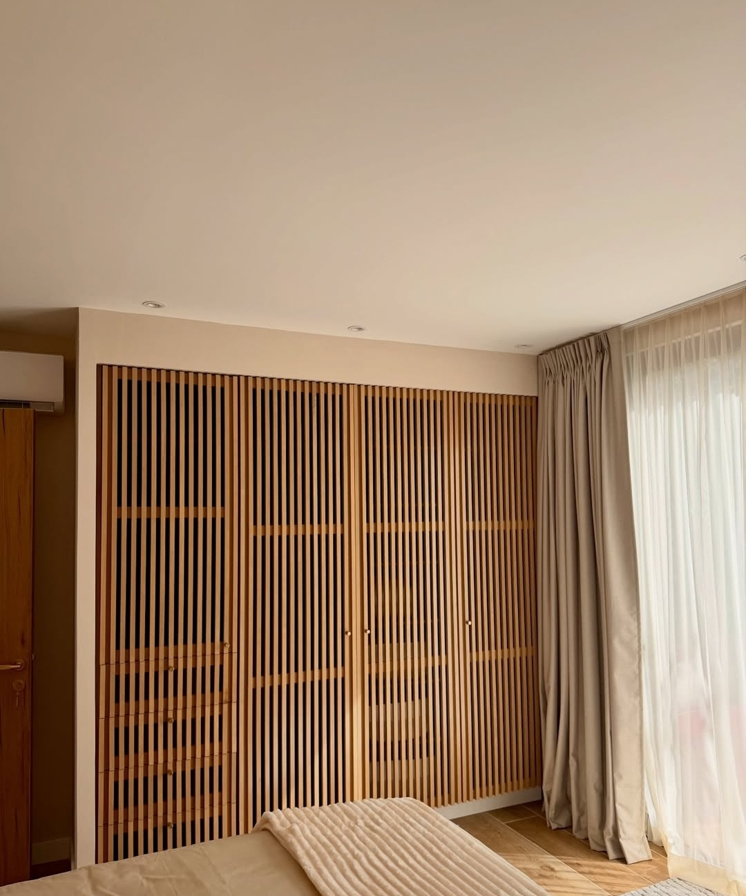
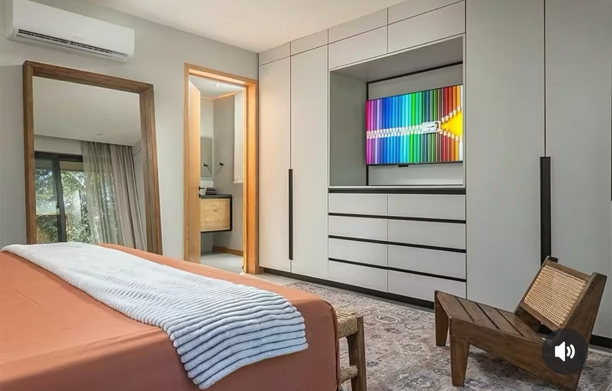
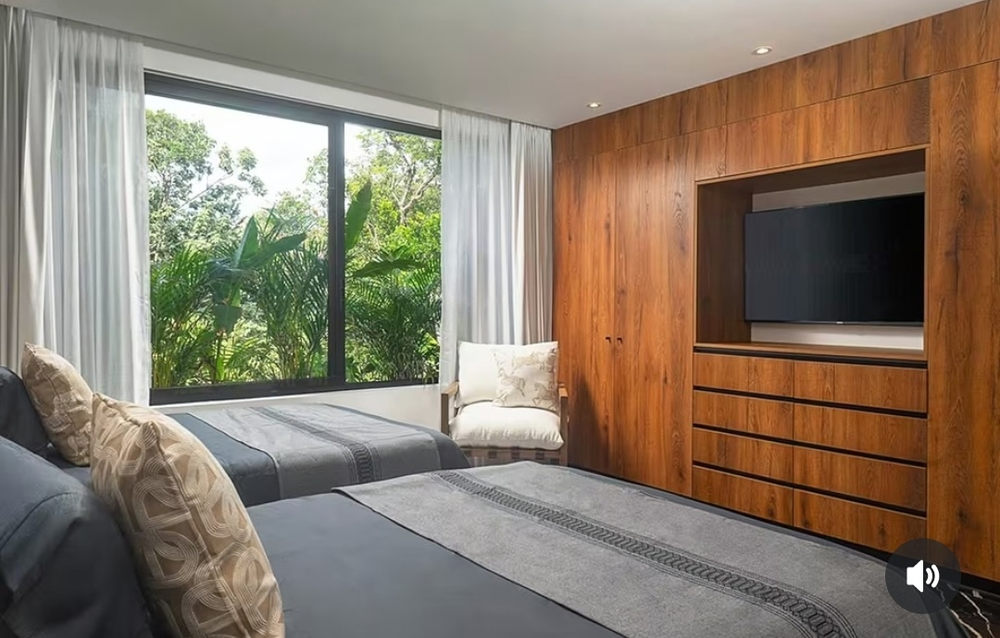
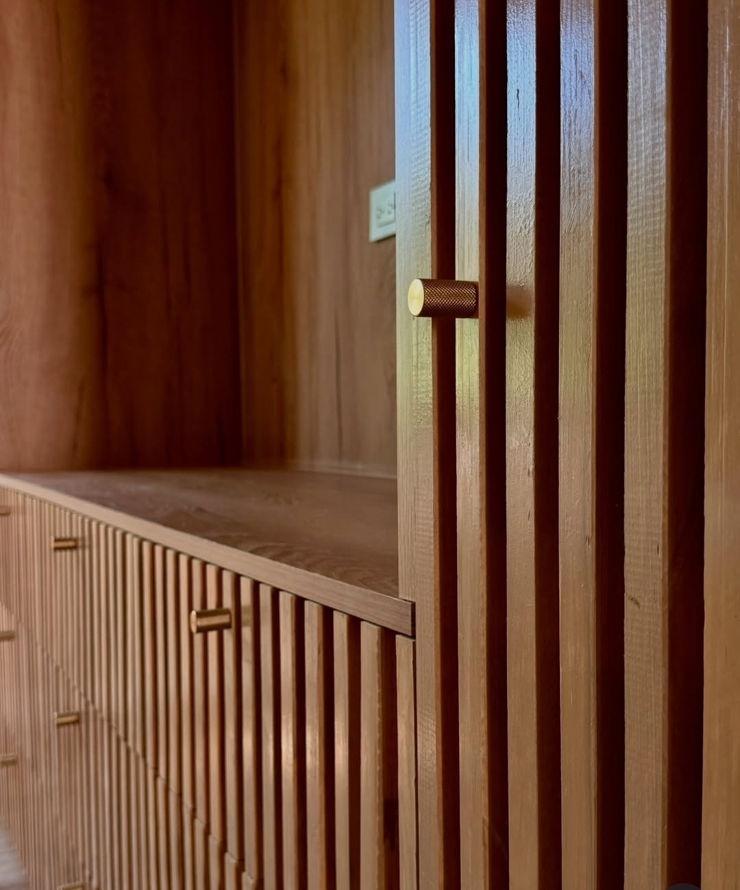
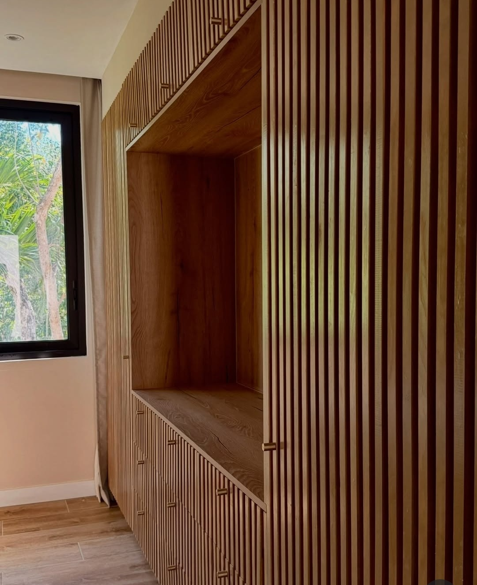
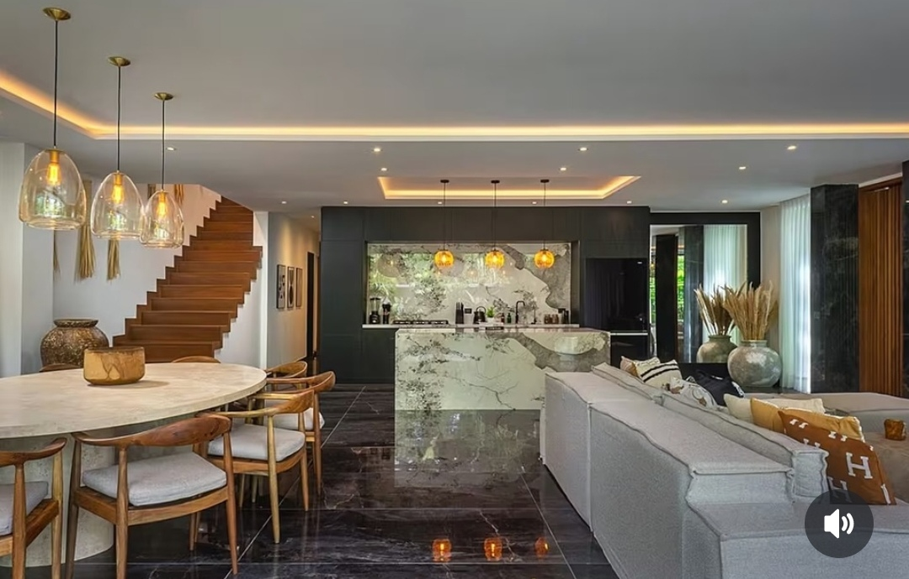
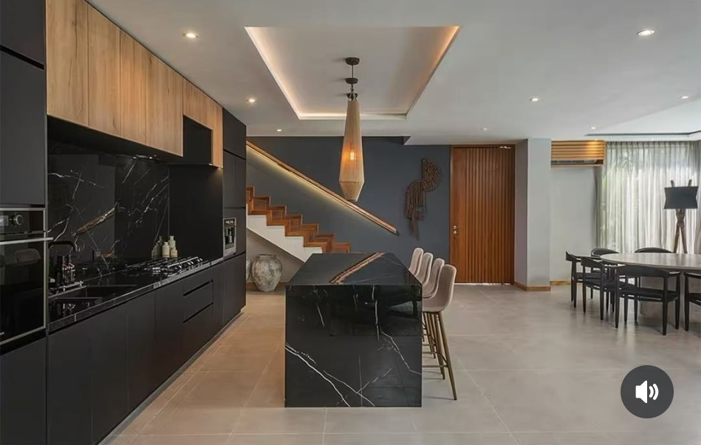
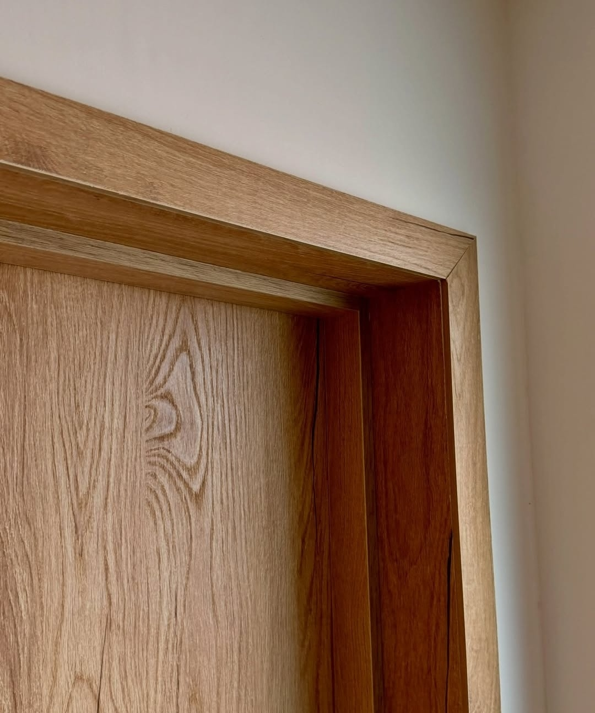
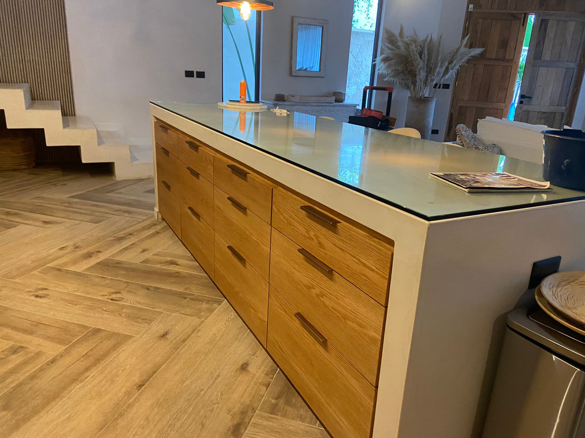
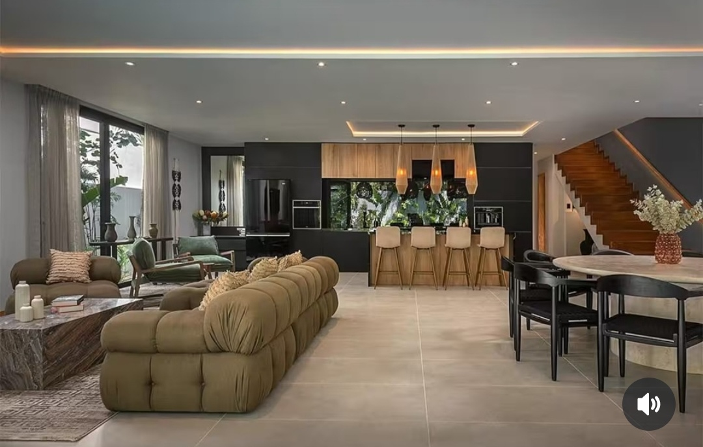

Le nostre creazioni
Cosa realizziamo
per voi
Ogni pezzo è unico, realizzato su misura nel nostro laboratorio di Playa del Carmen




Cucine, vestidores y espacios únicos — fabricados a mano con el saber hacer de los mejores maestros artesanos de Francia
Hijo de carpintero, Raphaël se formó con los Compagnons du Tour de France en Seynod — cinco años de formación en fabricación, instalación y mobiliario de alta gama en varios países europeos. En 2023, terminó mejor alumno de su promoción. Eligió regresar al país donde creció para fundar Ka'ax Creación.

Ka'ax significa «bosque · madera» en lengua maya — la materia prima, la esencia misma de nuestro oficio, arraigada en esta tierra.
Ogni pezzo è unico, realizzato su misura nel nostro laboratorio di Playa del Carmen




Cada mueble puede esconder un espacio seguro — invisible, accesible solo per voi. Para sus relojes de colección, joyas de familia, documentos valiosos.
Envíenos una foto de su espacio actual por WhatsApp. Nuestro artesano crea per voi una simulación personalizada — gratuita, en 48h.






Il nostro team accoglie clienti di tutte le nazionalità insediati nella Riviera Maya e in tutto il Messico
Un preventivo gratuito, una consulenza su misura e un artigiano formato dai migliori di Francia — a Playa del Carmen.
Ka'ax Création trabaja a partir de 300,000 MXN para una cocina integral completa. El presupuesto varía según los metros lineales, los materiales (madera maciza, MDF lacado, chapa), el número de módulos y los accesorios integrados. Proyectos de alta gama van de 500,000 a 1,500,000 MXN. Ka'ax Création no trabaja por debajo de ese umbral para garantizar la calidad artesanal europea.
Sí. Nuestro taller está en Playa del Carmen y cubrimos toda la Riviera Maya e islas: Cancún, Tulum, Puerto Morelos, Puerto Aventuras, Playa del Carmen, Isla Mujeres y Cozumel. También realizamos proyectos selectivos en la Península de Yucatán: Mérida, Holbox, Valladolid, Tizimín y Campeche. El desplazamiento y la instalación están incluidos en el presupuesto.
El proceso completo toma entre 6 y 10 semanas: 1–2 semanas de visita técnica y diseño, 4–6 semanas de fabricación en taller, 1–2 semanas de instalación en domicilio. Los plazos se confirman al firmar el contrato.
Los espacios de discreción son compartimentos secretos integrados de forma invisible directamente en la carpintería a medida: fondos dobles en cajones de cocina, paneles corredizos en closets, espacios ocultos en cabeceras o muebles de sala.
Se activan mediante mecanismos magnéticos o por presión, sin ninguna cerradura visible. Perfectos para guardar relojes de lujo, joyas, documentos importantes, efectivo o cualquier objeto de valor.
Ka'ax Création es uno de los únicos talleres in Messico que ofrece este servicio integrado directamente en la fabricación del mueble, sin añadidos externos. Se planifica desde el diseño inicial y no aparece en ningún plano ni presupuesto estándar — solo bajo petición expresa del cliente.
Trabajamos principalmente con tableros melamínicos de alta densidad (melanina de calidad europea), combinados con perfiles de aluminio, lacados y chapas de madera natural según el proyecto. Para estructuras específicas utilizamos maderas macizas seleccionadas. Todos los materiales están adaptados al clima tropical húmedo de la Riviera Maya.
Il nostro laboratorio è a Playa del Carmen. Fabbrichiamo e installiamo in tutta la Riviera Maya e nella Penisola dello Yucatán — trasferta inclusa nel preventivo.
"Non importa dove si trovi la vostra proprietà nella Riviera Maya, il nostro team si sposta, installa e garantisce il lavoro in loco."